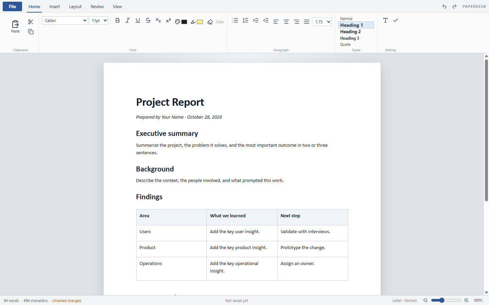
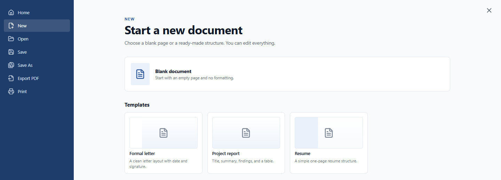

Format without friction
Fonts, sizes, colors, highlights, alignment, indents, and line spacing in a familiar ribbon.
Free desktop writing for Windows
Write, format, and save real .docx files in a calm, offline desktop workspace. PaperDesk has the ribbon you know and the page you need — without the account, cloud, or subscription.

What’s inside
PaperDesk is deliberately familiar. The essentials live in the ribbon, the page stays at the center, and your documents stay on your computer.
Fonts, sizes, colors, highlights, alignment, indents, and line spacing in a familiar ribbon.
Open existing Word documents and save your work as a real .docx file, not a locked-in format.
Drop in the things a document needs. Build a table, place an image, or add a link in seconds.
Export a fixed-layout PDF or send the page to a Windows printer without leaving the app.
Choose Letter or A4, portrait or landscape, margin presets, and 50–200% zoom.
Hide the interface, switch on spell check, and let the page take over when the words start flowing.
Start with structure
Open a clean page or begin with a layout that already knows what it is doing. Every template is fully editable, and every document can be saved as .docx.

Download
Free for Windows 10 and 11. Download the installer, keep it for yourself, and pass it along to a friend who needs a quieter place to write.
26B6F8763107B52AA6BAB2BB92C2D0A7881629480EF52583EF7FC8231BA0A9CB
Quick start
PaperDesk-Setup-0.1.0.exe and put it anywhere you like.
Windows SmartScreen warning? This build is unsigned. Choose More info, then Run anyway.
Requires Windows 10 or 11 (64-bit) and about 500 MB of free space. No account, no cloud, no telemetry.
Behind PaperDesk
One idea, one build, and a free desktop word processor made to feel at home on Windows. PaperDesk is independent, local-first, and here to stay out of your way.
PaperDesk is an independent project. It is not affiliated with Microsoft. “Word” and “Microsoft” are trademarks of Microsoft Corporation, used here only to describe file compatibility.